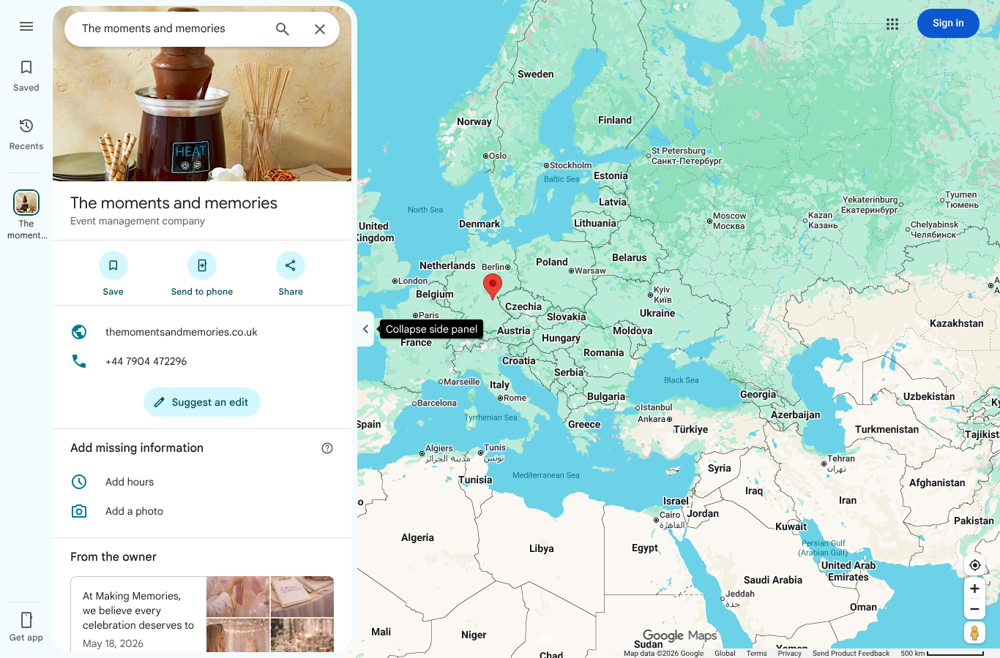
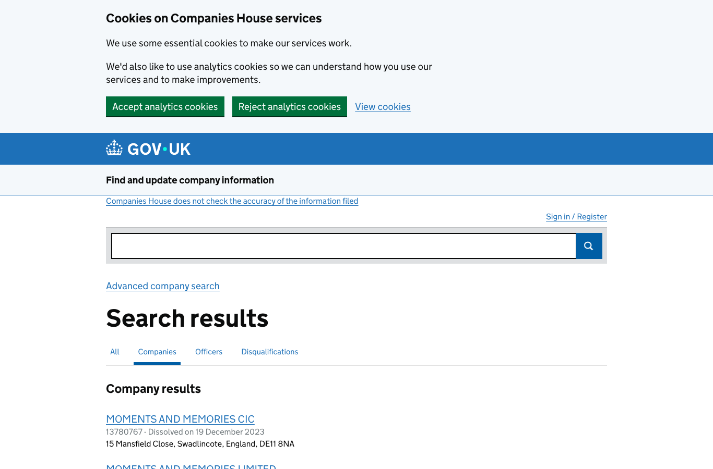
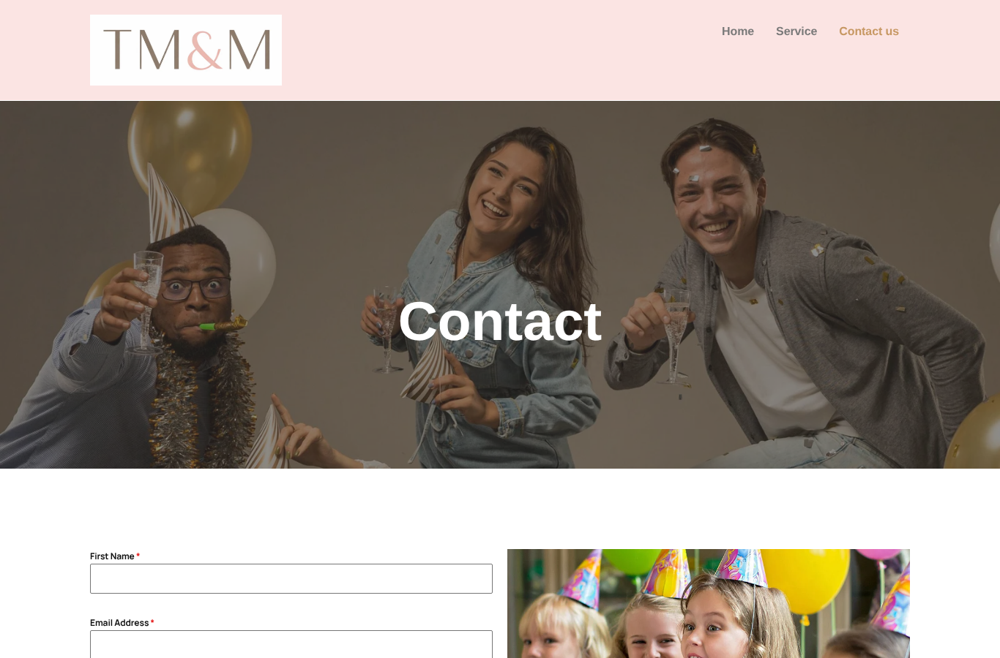
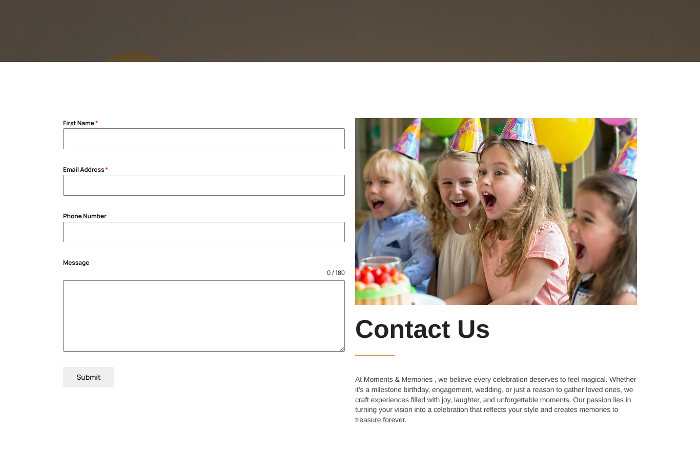
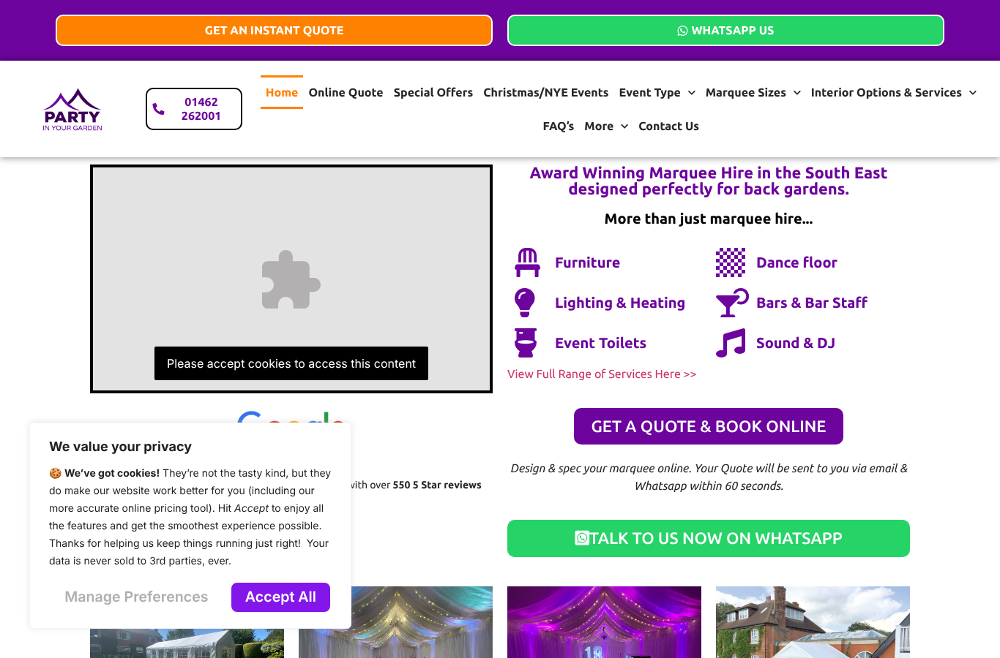
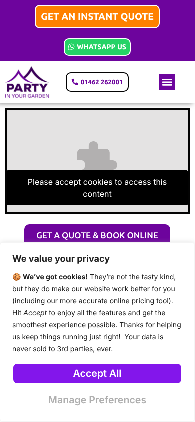
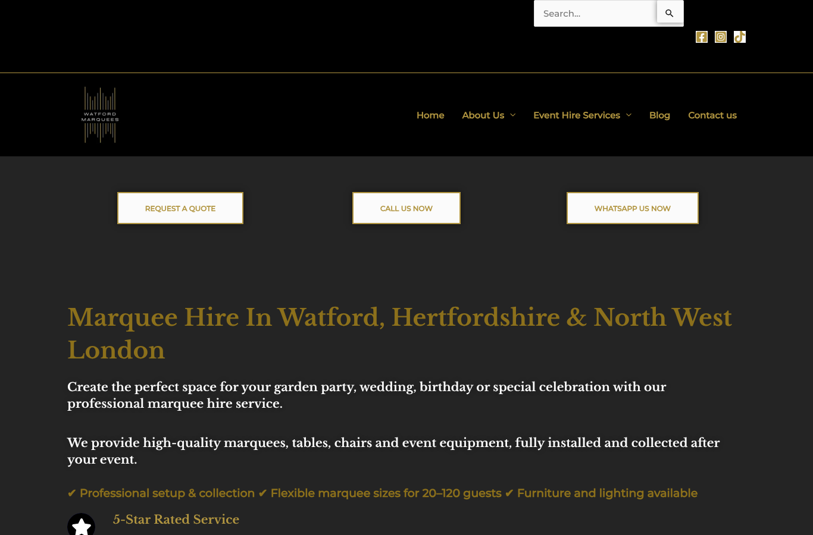
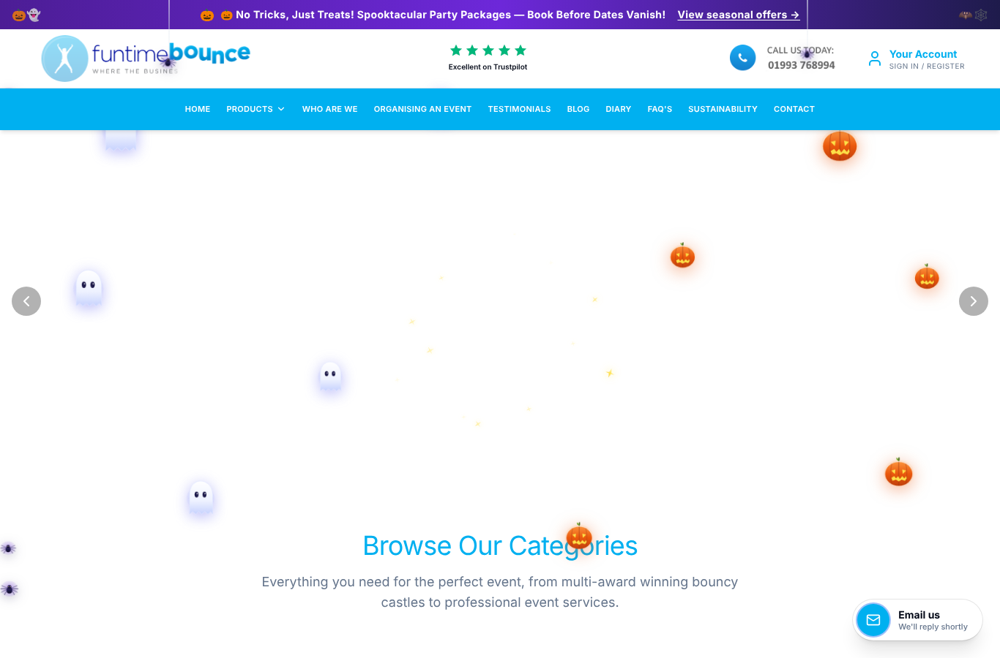
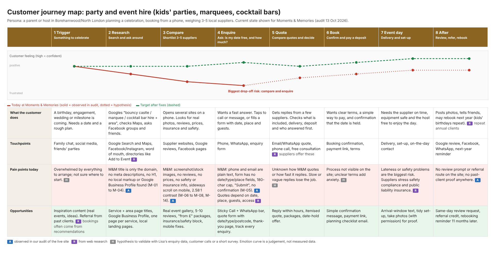

Lead: Lisa Henderson, self-employed, Borehamwood. Website: themomentsandmemories.co.uk. Researched: 13 October 2026. Prepared for: the Maximus Mediascape team (internal). Contact details are in the CRM, not in this report.
How to read the tags: A I saw it myself and saved the evidence. R it comes from outside research, with a link. H it is my judgement or hypothesis. N I could not check it.
I researched this lead from the form she filled in, then looked at her website, her public footprint, four similar businesses and two quote marketplaces. This is what I came across.
Overall, I'd rate her online presence 4 out of 10, as a judgement H. She is a warm lead H: weak presentation and no tracking, but an unconfirmed budget.
| Step | What I did | Tool | Result |
|---|---|---|---|
| Website | Loaded the home, service and contact pages on desktop and mobile, took screenshots | Headless Chromium (Playwright) | Worked after waiting out the host's "checking your browser" screen |
| SEO | Crawled the site against 52 rules | jev-seo (open source) | 8 URLs, 11 findings. It scored 95/100, but that score only checks tags and headers and is not a quality score |
| Speed and accessibility | Ran Lighthouse (mobile and desktop) and Pa11y (axe) | Lighthouse, Pa11y | See section 4 |
| Technology | Detected platform, hosting and tracking tools | wappalyzer-next, with a manual check of the page source | Worked in fast mode |
| Public footprint | Google Maps, Companies House, domain registry, her sitemap | Chromium and public records | Worked |
| Competitors | Homepages, screenshots, technology and Google Maps ratings for four businesses and two marketplaces | Same | Worked |
| Our offer | Read our own sitemap and plan pages | Direct fetch | Prices confirmed 13 Oct 2026 |
What I could not do N: Google Search (blocked by a robot check), Facebook and Instagram (login walls or errors), Yell (blocked) and Trustpilot (error). The Wayback Machine was not reachable from this environment, so I do not know how her site looked earlier. A Meta Ad Library search returned only unrelated advertisers, so I can't say whether she runs ads. The browser plugin could not start here because it needs a Chrome that is already open. Keyword demand needs Google Keyword Planner data, which I do not have yet.
Raw files, screenshots and checksums are listed in the appendix.
The form gave her name, city (Borehamwood), the company "Self employed. Moments and memories." and her interest, "My Market Share (Digital Marketing & Lead Gen)" [A, from the lead details]. The wording "small startup, can't afford big agency retainers, need aggressive growth, let's see if we're a fit" arrived with the lead text. I can't tell whether Lisa wrote it or it is campaign copy, so I am not treating it as her words N.
| Item | What I found | Tag |
|---|---|---|
| Business type | Self-employed events business: kids' parties, marquees and decor, cocktail bars and catering | A |
| Company registration | Companies House search: no active company named Moments and Memories at Borehamwood. Similar names are dissolved or in other towns. "Moments 2 Memories Limited" (Nuneaton, incorporated 30 June 2026) looks unrelated. This fits a sole trader but does not prove it | A |
| Domain | Registered 16 Dec 2025 through registrar AXIDOMAINS, expires 16 Dec 2026, nameservers are ns1 and ns2.dns-parking.com. The registrant is hidden | A |
| Hosting | Hostinger with LiteSpeed cache | A |
| Address | Her website footer shows an address in central London (EC1V). She is based in Borehamwood. They conflict | A |
| Phone | The number on her website and Google listing matches the one on the form, so there appears to be no separate business line | A |
| The site shows a Gmail address, not an address on her own domain | A | |
| None, per the team | A | |
| Facebook, Instagram | Not checked (blocked) | N |
I searched Google Maps without signing in. A listing exists: "The moments and memories", category Event management company, with her website and phone number A.


A WordPress 6.8 site built with Elementor, on Hostinger. It has three real pages (Home, Service, Contact us) plus a "hello-world" post, an author page and template pages that are public A.


| Measure | Mobile | Desktop |
|---|---|---|
| Lighthouse performance | 86 | 95 |
| Largest content shown | 3.8 s (above the 2.5 s "good" mark) | 1.3 s |
| Accessibility | 97 | 93 |
| SEO | 92 | 92 |
Speed is acceptable, not a blocker A. The accessibility problems are all colour contrast: white text on her gold is 2.58 to 1, where 4.5 to 1 is the standard. Pa11y found 24 contrast violations on the home page, 34 on the service page and 4 on the contact page, and nothing else A. The page also scrolls sideways on a phone (410 px wide in a 390 px screen) A.
| ID | Area | Severity | Finding | Evidence |
|---|---|---|---|---|
| M-15 | Measurement | High | No analytics or tracking tags (no Google Analytics, Tag Manager, Facebook Pixel or Clarity) | Homepage HTML and technology scan |
| M-05 | Conversion | High | Phone and email are plain text, no tap-to-call or WhatsApp. The form has First name, Email, Phone and Message with a 180-character limit, and no event type, date or place | Screenshots |
| M-01 to M-03 | SEO | High | Every page title is just the domain. No meta descriptions on the 6 indexable pages. No H1 heading on the home, service or contact pages | jev-seo report |
| M-06 | Trust | High | No reviews, prices, real event photos, FAQs or safety and insurance information | Screenshots |
| M-04 | Local | High | No local business markup. The footer address conflicts with where she is based | Page source, footer |
| (new) | Legal | Medium | No privacy, cookie or terms pages or links, and no cookie notice seen. The common addresses return "not found" | assets/sources/legal-and-sitemap-checks-2026-10-13.txt |
| M-07, M-14 | Mobile, accessibility | Medium | Sideways scroll on phones; contrast failures | Lighthouse, Pa11y |
| M-08, M-09 | Design, content | Medium | Hero and card images look like screenshots (judging by file names). Brand name appears as "Making Memories" in places. One long Services page. A thin Contact page | Page source, screenshots |
| M-11 | Housekeeping | Medium | Sample "hello-world" post, an author page that exposes a username, and template pages are public and in the sitemap | Sitemap |
| M-10 | Performance | Low | Mobile LCP 3.8 s, plugin-heavy page (27 scripts, 37 stylesheets), some failing requests | Lighthouse |
| M-12, M-13 | Hygiene | Low | No favicon, missing share tags and some security headers; newsletter box with no offer; "proudly powered by WordPress" footer | jev-seo |
The full table with fixes is in findings.md.
WordPress 6.8, Elementor and Header and Footer Builder, jQuery, particles.js, Hostinger with LiteSpeed, PHP 8.2. No analytics tool detected A. Two competitors run a newer WordPress release (7.1) A. Her version can be confirmed in her dashboard before anyone says it is out of date N.
I picked four similar businesses and two quote marketplaces from search results. This is a small sample of homepages only, so it shows patterns, not the whole market H. I did not find a hirer based in Borehamwood itself.
| Business | What they do | Tools detected | Google rating (signed out) |
|---|---|---|---|
| Party in Your Garden | Garden marquees, furniture, lighting, bars | WordPress, Elementor, Rank Math, Cloudflare, WP Rocket, CookieYes, Tag Manager, Fluent Forms | 4.9 |
| Watford Marquees | Marquee and furniture hire | WordPress, Astra, Elementor, Rank Math, WPForms, Hotjar, Google Analytics, NitroPack | 5.0 |
| Active Softplay | Bouncy castles and soft play | ASP.NET, Telerik, Bootstrap, Cloudflare, Cloudinary, Google Analytics, WhatsApp chat | 4.9 |
| Funtime Bounce | Bouncy castles, inflatables, simulators | Cloudflare, Google Analytics, Tag Manager | Not captured (the Maps search matched a different business) |
| Add to Event, Eventsense | Marketplaces where customers get several quotes | Google Analytics, review widgets | n/a |
Review counts were not captured. Party in Your Garden states "550 5 Star reviews" on its own homepage [A, their claim]. Ratings are signed-out Google Maps values matched by business name A.




| Party in Your Garden | Watford Marquees | Active Softplay | Funtime Bounce | |
|---|---|---|---|---|
| Phone visible | Top of every page | Yes | Large, top | Yes |
| Prominent, many links | Yes | Yes | No | |
| Main button | "Get an instant quote" | "Request a quote" | "Details and Bookings" | "Book now" |
| Prices on homepage | A £100 figure and special offers | None | About £110 to £175 per item | About £315 to £625 per item |
| Proof | "550 5 Star reviews" badge, case studies, testimonials | Mentions reviews | Reviews and trade badges | Testimonials, awards |
| Safety or insurance wording found | Not found | Not found | Yes | Yes |
| Area in title or headline | Region only | Yes: "Watford, Hertfordshire and North West London" | Yes | No |
| Navigation by | Event type, marquee size, services | Five generic links | Products | Ten links |
| Seasonal pages | Christmas and New Year, special offers 2026/2027 | Not seen | Not seen | Not seen |
| # | Gap compared with the competitors | Why it matters |
|---|---|---|
| 1 | No tracking | She can't tell which visits become enquiries. All four competitors run Google Analytics or Tag Manager |
| 2 | No quick contact (tap-to-call, WhatsApp, quote form with date and event type) | The strongest competitors lead with these |
| 3 | No prices or packages | Two of four show prices |
| 4 | No proof (reviews, real photos, safety and insurance) | Customers compare suppliers before enquiring H |
| 5 | Weak local signals (generic titles, no markup, address conflict, thin Google listing) | Competitors put the area in titles and use local markup |
| 6 | No legal pages or cookie notice | Basic trust and compliance |
| 7 | Mobile and contrast problems | Visitors on phones, readability |
| 8 | No seasonal offers | Christmas and New Year parties are being booked now H |
Prices and scope are from our own site, checked on 13 Oct 2026 and to be confirmed before quoting A.
| Option | Price | Covers |
|---|---|---|
| Free 15-minute website check | Free | Our entry offer |
| Starter | From £999 plus VAT, one-off, 50% to start, about 2 months, up to 5 pages, 2 revisions, client owns the site | Bespoke mobile site, click-to-call and WhatsApp button, working form, Google listing set-up, analytics and Search Console, reviews kit, legal pages and cookie notice, AI-search-ready FAQ and structured data, 90-day plan, 30 days support |
| Care | £599 a month plus VAT | Monthly visibility work: listing posts, articles, social, reporting |
| Growth | £999 a month plus VAT, plus ad spend (at least £300, £500 recommended) | Care plus tracking, a managed ad campaign, email and a lead chatbot |
| Website Redesign and Optimisation | Quoted | If she wants to keep and fix her current site |
Not included in Starter: domain, hosting and email running costs, paid ads, extensive copy or photography, shops or booking systems.
How the findings map to Starter H: analytics, tap-to-call, WhatsApp, a better form, titles and headings, local markup, a Google listing set-up, legal pages, mobile and contrast fixes and the reviews kit are all covered. Real photos, prices and written copy need her input.
Scope: a full new site for her could need about 10 pages, but Starter covers 5. A sensible split is a first phase of Home, Services (one page), Gallery and reviews, Get a quote, and About and contact, then separate service and area pages later H.

| Question | Status |
|---|---|
| Need | Clear: weak presentation, no tracking, no quick contact A |
| Budget | Unknown N. Starter is a one-off from £999 plus VAT; Growth with ad spend may be too much |
| Decision-maker | Probably Lisa herself, as she is self-employed H |
| Timing | Unknown N. Christmas and New Year bookings are likely under way H. Her domain renews on 16 Dec 2026 A |
| Fit with our offer | Good, mainly Starter H |
| Consent to contact | Not checked: I have not seen what the form said about being contacted, or by which channel N |
Lead score: warm H, using the local-business rubric from the marketingskills project (weak online presentation, active status unconfirmed).
All captures are dated 13 October 2026 unless the file name says otherwise.
| File | What it is | Size (KB) | SHA-256 (first 16) |
|---|---|---|---|
assets/call-brief-p1.png |
Tool output or screenshot | 669 | 71448115f3e67389 |
assets/call-brief-p2.png |
Tool output or screenshot | 1761 | edf5b09955dc59b1 |
assets/call-brief-p3.png |
Tool output or screenshot | 444 | b089259cec03ac24 |
assets/call-brief-p4.png |
Tool output or screenshot | 410 | 9c4ee0f21810e7e4 |
assets/call-brief.pdf |
Tool output or screenshot | 7556 | 32e4ecad49ef2dbf |
assets/competitors/active-softplay-desktop.png |
Competitor capture | 1094 | 7833ce11dcadc202 |
assets/competitors/analysis.json |
Competitor capture | 5 | d26fef10d14b74bf |
assets/competitors/funtime-bounce-desktop.png |
Competitor capture | 166 | 93c87ee4d41e07f4 |
assets/competitors/google-maps-active-softplay.png |
Competitor capture | 921 | 2697ab63f5b1fbc2 |
assets/competitors/google-maps-party-in-your-garden.png |
Competitor capture | 259 | b205d2f28e9a182d |
assets/competitors/google-maps-watford-marquees.png |
Competitor capture | 219 | c249ce8e3156f9cb |
assets/competitors/party-in-your-garden-desktop.png |
Competitor capture | 293 | a0595e9c8220538f |
assets/competitors/party-in-your-garden-mobile.png |
Competitor capture | 56 | 51a98e77f02c1349 |
assets/competitors/watford-marquees-desktop.png |
Competitor capture | 112 | f32bc7009e25ed30 |
assets/contact-desktop.png |
Tool output or screenshot | 1025 | 214fa80f058693d4 |
assets/customer-journey-map.png |
Tool output or screenshot | 296 | d089ab9a27dd1b33 |
assets/home-desktop.png |
Tool output or screenshot | 1655 | 819e4443232c4847 |
assets/home-mobile.png |
Tool output or screenshot | 1998 | ce28d107797a0f7d |
assets/jev-seo-actions.xlsx |
Tool output or screenshot | 331 | 62ab17315448a6b5 |
assets/jev-seo-audit.json |
Tool output or screenshot | 53 | 575bfe859e38f0e1 |
assets/jev-seo-charts/categories.png |
jev-seo chart | 76 | 86178dca34ca20a1 |
assets/jev-seo-charts/depth.png |
jev-seo chart | 15 | 75a1d01f87f2a883 |
assets/jev-seo-charts/funnel.png |
jev-seo chart | 27 | 33cf6b31736fdac9 |
assets/jev-seo-charts/gauge.png |
jev-seo chart | 29 | 4695de582e0781f7 |
assets/jev-seo-charts/impact_effort.png |
jev-seo chart | 53 | fad12eadc91eb6fd |
assets/jev-seo-charts/severity.png |
jev-seo chart | 18 | b31a71f6c19c75a3 |
assets/jev-seo-charts/severity_by_category.png |
jev-seo chart | 41 | 9c22fb618dad686c |
assets/jev-seo-charts/site_map.png |
jev-seo chart | 106 | b11be0d0df28dfe1 |
assets/jev-seo-charts/status.png |
jev-seo chart | 9 | 9b85392c9a797902 |
assets/jev-seo-charts/title_len.png |
jev-seo chart | 19 | 56e33167583782f2 |
assets/jev-seo-charts/words.png |
jev-seo chart | 21 | 481e1985818869ed |
assets/jev-seo-report.md |
Tool output or screenshot | 11 | 3f52db0504344d7f |
assets/jev-seo-report.pdf |
Tool output or screenshot | 222 | 0ac1e89e054394c2 |
assets/pa11y/contact-us.json |
Pa11y (axe) results | 2 | 4d940d4e5582da0f |
assets/pa11y/home.json |
Pa11y (axe) results | 18 | fa14d9c8fe842e16 |
assets/pa11y/service.json |
Pa11y (axe) results | 25 | 7d3916ed95d9eb90 |
assets/research-report.pdf |
Tool output or screenshot | 9055 | 2c5906e45dbc5422 |
assets/service-desktop.png |
Tool output or screenshot | 1903 | 86a643d49ed4b4b5 |
assets/sources/companies-house-search-2026-10-13.png |
Source capture (public site or record) | 90 | 84435d7fd9fb0257 |
assets/sources/google-maps-listing-2026-10-13.png |
Source capture (public site or record) | 697 | 61df4ec5597d3b01 |
assets/sources/legal-and-sitemap-checks-2026-10-13.txt |
Source capture (public site or record) | 0 | bc8ea59406257f20 |
assets/sources/rdap-themomentsandmemories-2026-10-13.json |
Source capture (public site or record) | 8 | 06b9bf43af05a77c |
assets/sources/website-contact-desktop-top-2026-10-13.png |
Source capture (public site or record) | 768 | ee3c569bfcbeefb3 |
assets/sources/website-contact-form-2026-10-13.png |
Source capture (public site or record) | 430 | dc04158d0da442d4 |
assets/sources/website-home-desktop-top-2026-10-13.png |
Source capture (public site or record) | 1367 | 2eea317eee49475d |
assets/sources/website-home-mobile-top-2026-10-13.png |
Source capture (public site or record) | 388 | d7c5a0ca836a11d4 |
assets/sources/website-service-desktop-top-2026-10-13.png |
Source capture (public site or record) | 721 | 11e42a1ccebad160 |
assets/tech-scan/wappalyzer-next-fast-2026-10-13.json |
Technology scan (wappalyzer-next) | 9 | e82a2dbc1523be90 |
Open-source tools used: jev-seo (MIT), marketingskills (MIT), wappalyzer-next (GPL-3.0), Lighthouse, Pa11y. Our offer: Starter plan, Care and Growth plans. Other documents: findings.md, competitor-research.md, gap-analysis-and-solution.md, customer-journey.md, call-brief.json (call plan and script).